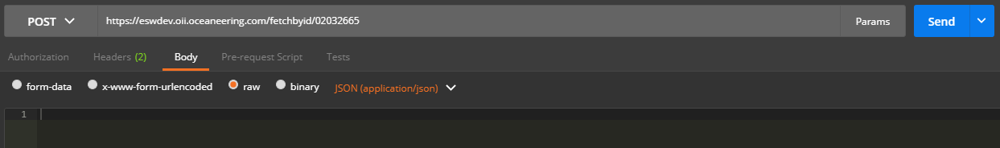
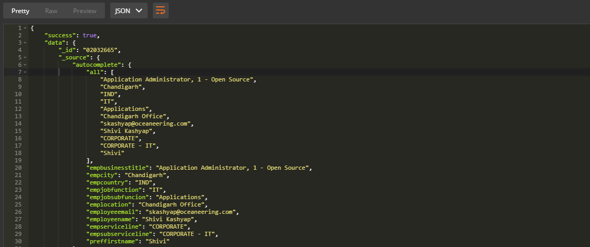
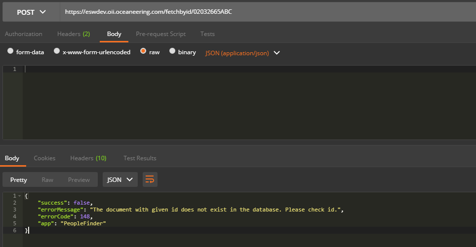

The Fetch API allows to get a JSON document from the index based on its id. The following example gets a JSON
document from an index called twitter with id valued 02032665.
Remember, access_token provided will decide on
which index search operation needs to be done for particular id. For sampling, PeopleFinder app_name is used
and it
is searching an employee with empid.


A well observed and tested error handling integrated in Wrapper application as every error encountered during usage of the API will throw an user understandable error output.
